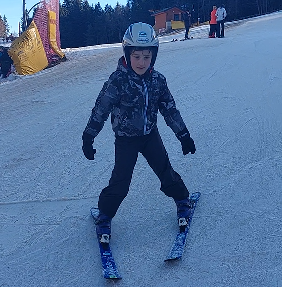

Poi è arrivato l'impatto con il mondo del lavoro. Ed è stato un impatto poco divertente. Da neo-laureato in ingegneria mi sono ritrovato ad inseguire lavori che non volevo fare e ad accettare
la frustrazione di ricevere silenzi anzichè feedback costruttivi post colloquio. Mi sono scontrato con la dura realtà. E mi sono adattato.
Per circa 10 anni ho lavorato in ambito industriale nello sviluppo software. Poi è arrivato il COVID che mi ha dato il tempo di ripensare a quello che volevo fare nella vita.
L'AI stava iniziando a prendere piede in modo più massiccio e m'incuriosiva molto essendo un amante della matematica.
Ho iniziato a studiare le reti neurali con PyTorch grazie ad un libro consigliato da un amico. Sono partito qualche step in là, ero troppo gasato.
Ho capito che la mia strada era quella, così ho iniziato a frequentare corsi pratici su Udemy, Start2Impact ed ho anche completato un corso online dell'MIT (Massuchussetts Institute of Technology).
Kaggle è diventato il mio migliore amico.
Ah dimenticavo un dettaglio non trascurabile : all'età di 29 anni son diventato papà. Un scricciolo che nel 2014 pesava 4.3Kg alla nascita e ora ha 11 anni.
